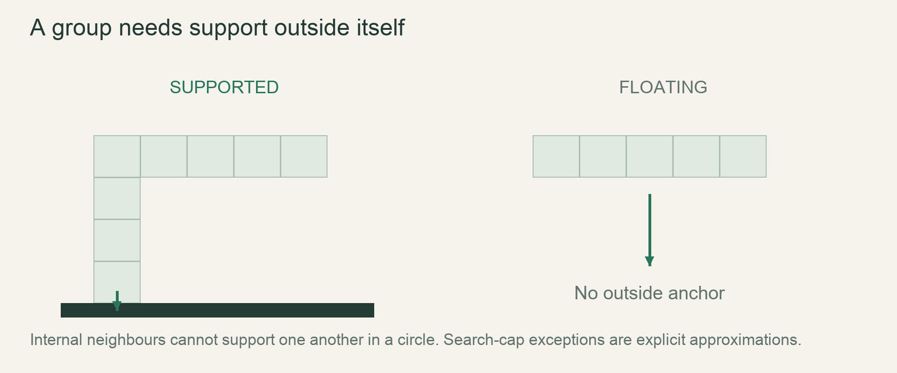

M2 / Fire, weather & supportLesson 50 of 100 · ~5 min reading + build time
Drop and float rigid groups as units
A slab lands intact, a weak group breaks under the specified drop condition, and a raft/floe follows the approved buoyancy rule.
Previously: Find connected support groups. Keep that working result available before starting this lesson.
Why we need this now
Once support identifies a loose roof piece, moving its cells independently would squash or stretch it. The structure needs one shared displacement. This is a useful change of representation: the world still contains cells, but a temporary group list describes a rigid motion decision across them.
Your result: A slab lands intact, a weak group breaks under the specified drop condition, and a raft/floe follows the approved buoyancy rule.

01Test the whole move before writing any cell
For every candidate downward displacement, inspect the destination of each member. Positions already occupied by the same group are not external collisions because they move together. Any external blocked destination rejects that displacement. Only after validating the complete candidate should cells be removed from old positions and placed in new positions. Interleaving validation and writes lets a partial group move while the remaining members collide with its own edits.
03Float as a group under the approved rule
Wood and ice are less dense than water in the material table, but a rigid aggregate may contain several materials. The current flotation rule needs an explicit group-density/support policy: minimum contact, displaced volume approximation or another declared simple test. Do not simply stop every solid above any liquid because stone would then float. Use small wooden raft, ice floe and metal/stone control fixtures and record the approximation before encoding it.
04Apply impact effects after landing
Track travelled fall distance for the group so an impact can distinguish a short drop from a brittle break. The design’s weak-material threshold is more than eight cells. Landing first establishes the destination; breakup then converts or releases fragments according to their defined kinds. A group that reaches the active margin stops under the frozen boundary policy instead of deleting half its members. Tests should retain both shape offsets and per-material counts except for explicitly approved break/destruction rules.
Read → predict → run → change
Walk through the working example
Isolated lab: save as scratch.rs, then run rustc --edition=2024 --test scratch.rs -o /tmp/rusty-lab-50 followed by /tmp/rusty-lab-50. Port the tested helper into the game only after the lab is understood.
Download this worked example ↧
fn allowed_drop<F: Fn(i32) -> bool>(maximum: i32, blocked: F) -> i32 {
let mut distance = 0;
for step in 1..=maximum {
if blocked(step) { break; }
distance = step;
}
distance
}
#[test]
fn the_first_obstacle_limits_the_whole_move() {
assert_eq!(allowed_drop(3, |step| step == 2), 1);
assert_eq!(allowed_drop(3, |_| false), 3);
assert_eq!(allowed_drop(3, |step| step == 1), 0);
}Read what each part does
- Start by writing down the inputs and the result you expect from the first assertion. Read the helper from top to bottom, naming every branch and state change before running the test. The small fixture is deliberate: a landscape hides errors that a few cells expose.
- The helper returns one, three or zero rows depending on the first blocked path position. In production the blocked predicate checks every group member at that displacement.
- This complete headless example isolates one mechanism. It does not replace your existing game file or implement an entire milestone. After the tests pass, move the relevant rule behind the world interface introduced earlier, then repeat the same fixture through that interface. Keep rendering out of this test path.
Expected result
The helper returns one, three or zero rows depending on the first blocked path position. In production the blocked predicate checks every group member at that displacement.Exact version numbers, paths and compiler wording may differ. Compare the behavior and file locations, not incidental output formatting.
Prediction · repair · transfer
Exercises you actually do
Write a prediction or make an attempt before opening a solution. Use the hint if stuck; then compare reasoning and verify with the stated check. A different implementation is fine when it satisfies the same contract.
Reject tunnelling
An obstacle blocks displacement two but displacement three appears empty. Can the group move three?
Need a hint?
The path, not just the endpoint, matters.
Worked solution
No. The largest valid prefix is one row. The group cannot pass through a solid intermediate position simply because its final cells would fit.
How to verify your result
The first assertion remains one.
Preserve shape
A two-cell beam at offsets (0,0) and (1,0) drops three rows. What offsets change?
Need a hint?
Shared displacement preserves relative positions.
Worked solution
Their world y values change together, but the relative difference remains (1,0). Assert relative offsets before/after rather than only one member location.
How to verify your result
All member pairs preserve their relative offsets until approved breakup.
Test brittle impact
Should a weak group falling exactly eight cells break under the stated rule?
Need a hint?
Read “more than eight” literally.
Worked solution
No. The threshold case eight stays intact; nine breaks under that rule. Include both assertions so a later >= change is deliberate.
How to verify your result
Boundary fixtures distinguish eight and nine cells.
When it goes wrong
Start with the observed symptom. Change one assumption at a time instead of pasting fixes until the error disappears.
The beam stretches while falling
What is happening: Members were validated/moved independently.
Try this: Choose one displacement, then commit all moves together.
The group collides with itself
What is happening: Old member positions are treated as external obstacles.
Try this: Use the group membership set when validating destinations.
Every solid floats
What is happening: Liquid contact was treated as unconditional support.
Try this: Apply the approved material/group-density flotation rule with dense controls.
Explain it without the example
Why can't a rigid group's cells each fall independently?
Reasoning to compare
Independent moves deform the group. A rigid move must validate and apply a single displacement for all its cells together.
Self-check only: test a prediction or ask your tutor if anything still feels arbitrary.
Finish with evidence
A slab lands intact, a weak group breaks under the specified drop condition, and a raft/floe follows the approved buoyancy rule.
Make one small variation without copying: predict it, run it and explain any difference. On another day, repeat one exercise from memory before starting the next lesson. Ask your tutor about any step you can execute but cannot explain.
This is an attempt marker, not a grade. Learning records are written only after demonstrated understanding.
Primary sources for this lesson
Use sources to verify the mechanism. The lesson itself supplies the instructions; the links are not a substitute for teaching them.